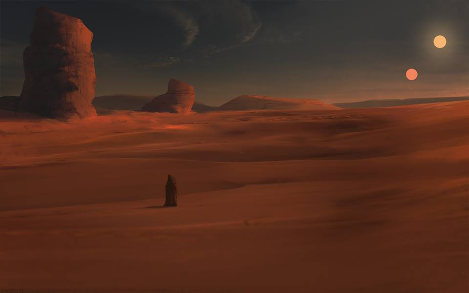

Préface
Les guerres de l'Étoile. Des rendez-vous qui traversent les frontières et les générations...
Mais au-delà de l'événement cinématographique que suscite chacun des épisodes à leur sortie plus ou moins controversée, Star Wars représente également une rencontre visuelle et sonore. Rencontre qui dépasse l'imaginaire ; des petits plaisirs éphémères pour nos yeux et nos oreilles.
Qui n'a pas, l'espace d'un court instant, détourné son esprit de l'histoire de l'Empire, des Rebelles, de la Force pour apprécier pleinement, sur une minuscule portion de scène, le corps décomposé d'un être expirant un dialecte aux sonorités étranges.
Velta, Freezer, BK Art et Sir Jean Bessiere vous propose, au travers d'une série audio, un hommage à ce qui participe de manière implicite au charme de l'œuvre de George Lucas.
Rejoignez l'aventure et laissez vous porter par de nouvelles histoires parallèles de l'univers Star Wars, aujourd'hui fortement alimenté par les fans de la saga.
Projet open source <3

Episode 0.3La planète aux deux soleils
Tatooine, en l'An -37.
Astre de la bordure extérieure.
Oubliée.. de la république galactique.
Où règnent.. canyons, pleines désertiques.
Des contrebandiers, chasseurs de primes, et parieurs en tout genre.
Les paris les plus fréquents se font sur les courses de bolides.
Courses aussi rapides que dangereuses, nombreux sont ceux qui y laissent leur peau.
Simples faits de jeux, règlements de comptes organisés,
Tirs.. des redoutables Hommes des Sables cachés dans les falaises.
Les Hommes des Sables sont nommés ainsi.. en raison de leur physique, très proche.. de celui des humains.
D'autant qu'ils n'abordent jamais les villes.
Leur véritable nom est "Tusken".
S'ils tirent sur les podracers de la course.. de la Boonta Eve,
C'est parce qu’ils n'ont pas apprécié la construction de l'arène de départ aux abords de la ville de Mos Espa,
Construite.. sur un ancien site sacré.. de la religion Tusken.
Ces pillards ont pris l'habitude de saboter la course.
Et ils n'hésitent pas.. à tuer..
Tout membre d'une autre espèce croisant leur chemin.
Ils refusent tout contact.. ou commerce.. avec les autres.
Les Jawas au contraire, seconds humanoïdes natifs de Tatooine, font affaire avec n’importe qui.
Dit comme cela, leur vie peut sembler risquée, surtout, en ces lieux de la galaxie mais..
Leur force de cohésion fait leur survie.
D'un naturel plutôt peureux, rares sont les Jawas qui osent s'aventurer seul.
Ils sont petits, maladroits, et s'organisent en tribus.
Certains s'installent à la forteresse des Jawas.
D'autres, traversent le désert dans de gigantesques chars de sable.
Dans lesquels ils entassent leur marchandise,
Des robots droïdes.. récupérés aux quatre coins du désert.
Ils restent tout de même quelques indépendants, missionnaires, ou commerçants solitaires.
Jawas, Tuskens, créatures marginales...
Mais qui peuvent se venter d'être les seuls espèces civilisées natives de Tatooine..
Ayant survécues.. en préservant leur communauté.
D'aucun affirment qu'ils hériteraient d'un même ancêtre commun.
Souverain de la planète.. aux deux soleils.
Episode 0.7Non loin de Mos Espa...
Non loin de Mos Espa,
De jeunes Jawas ont assemblé leur propre Sandcrawler.
Plus petit, plus rapide.
Ils ne font que zoner autour des villes à bord de leur engin monté de toute pièce.
En quête d'adrénaline et d'un moyen de s'extirper de leur quotidien,
Ils décident de faire participer l'un d'eux, Velta, à la Boonta Eve.
Aucun Jawa n'a jamais participé à une telle course et il est vrai.. que leurs
caractéristiques physiques.. ne leur en donnent hélas pas les réflexes nécessaires...
Episode 1Mécanique (Feat. Mebodo)
L’heure de la course n’est plus très loin. Pourtant, Velta n’a pas encore achevé les derniers réglages techniques de son podracer, baptisé.. Electronica 37.
Pendant qu’à l’avant du sandcrawler, ses compères.. poussent la vitesse du véhicule au maximum pour arriver à l’arène dans les temps, Velta retape.. tant bien que mal son bolide.
Episode 2Course de la Boonta
Tous les modules de course sont en place. Les spectateurs aussi.
Les concurrents font chauffer leurs moteurs, s’observent, se concentrent.
Puis le feu vert est donné. Tous démarrent.. dans un vacarme assourdissant.
Malgré la tension, Velta rentre sereinement dans cette course, bien qu’en stagnant aux dernières places. Son bolide n’est pas très puissant, mais l’allure suffit.. à bercer l’âme du Jawa. Les soleils se couchent, l’air devient agréable.. à respirer.
Soudain, il est percuté, aux abords du Virage de la Dune. Il est.. comme réveillé, pris de panique ! Mais il décide de tenir tête à son vis-à-vis… Très vite dépassé, il perd le contrôle.. de l’Electronica 37.
La chute est brève, et brutale. Il n’aura même pas eu le temps de distinguer son rival. Velta est hors circuit.
Episode 3La marche du Jawa
Tous les coureurs sont loin désormais. Le silence s’est installé, presque écœurant sur le canyon aride. Un canyon qui n’abrite plus en cet instant qu’un Jawa peinant à reprendre connaissance. Ses yeux.. s’ouvrent.. lourdement.. sur la vue de son bolide en ruine. Velta se relève, et prend conscience.. qu’il a volontairement mis sa vie en jeu.
Sur un cri de désespoir, il s’en va, librement, dans le désert sans fin.
Episode 4Tempête (Feat. Headvings)
Comme l’exprime ce jeune autochtone, il n’est cependant pas si aisé que cela d’affronter seul le désert…
Sur cette planète, de violentes tempêtes de sable viennent fréquemment rappeler à quel point la nature y est hostile.
Quelques grains dansent à fleur de dune, et il faut peu de temps pour que la ronde s’élève, tournoie, et ne fasse bientôt plus qu’une !
De nombreuses petites grottes se sont formées au cours des millions d’années de déplacement des roches. Velta se hâte.. vers la première caverne venue. A l’abri de cette antre, le Jawa observe depuis l’intérieur.. le chaos régnant au dehors.
Episode 5Pendant ce temps sur Geonosis…
Quelques pas seulement à l’échelle de la galaxie, séparent Velta.. d’un de ses semblables, pris en otage sur une planète voisine, dénommée.. Geonosis.
Un mercenaire, membre d’une confrérie Jawa indépendante a été capturé par les hommes du roi local, Poggle le Bref, alors qu’il était en mission secrète. Pris en flagrant délit dans les sous-sols d’une usine de fabrique de droïdes appartenant à la Fédération du Commerce, il a refusé de parler, et a été emprisonné. L’heure.. est venue pour lui de subir le châtiment.. réservé à tous les opposants : se retrouver seul, dans les arènes de la mort, face aux pires créatures de la galaxie.
Episode 6Route de nuit
La tempête s’apaise enfin. A la nuit tombée, Velta décide de reprendre son chemin. Il est toujours plus sûr de rester éveillé et sur une zone dégagée car.. qui sait quelle créature pourrait surgir des sombres recoins rocailleux… Mieux vaut progresser. Une légère brise vient clore les dernières rafales de sable, et la lumière n’est plus. Le Jawa se laisse guider par son instinct, et par les reliefs encore perceptibles du désert.
Episode 7Radio
Bientôt, il croit distinguer au loin comme des scintillements qui l’intriguent. Il veut savoir. De ce point incertain des sons lui parviennent, d’abord faibles, puis soudain si proches.
Il heurte un objet, se penche, s’en empare. Comme il est lourd ! Un instant interdit, Velta sans plus tarder s’enfuit. Comme en quête d’un abri, il contourne par les rochers plus à l’ouest.
Velta s’immobilise, l’observe enfin. Il actionne quelques boutons au hasard. De l’objet noir, oblong de forme, sourdent des bribes de voix par intermittence.
Sur l'émetteur radio, il est écrit.. en lettres capitales rouges : Czerk R73
Episode 8Auprès du feu d’une tribu de moines B’omaar (Feat. Aerial Roots)
Le R73 continue de brailler. Velta finit par s’engouffrer dans un étroit passage rocheux. Une faible et oscillante lumière est son unique repère, jusqu’à ce que retentissent des cris.. au sein du corridor. Puis des percussions. Cette fois encore, il saura.
La cadence prend fin. L’ouverture est toute proche. Ebloui à un dernier détour, quelques secondes suffisent pour que sa vision redevienne nette. Un immense feu. Et tout autour, comme dans une clairière de sable, des êtres, sous des capuches. L’un deux fait résonner sur la paroi de rocaille un chant.. d’une énergie.. prodigieuse.
Velta est saisi.
Nul ne semble l’avoir remarqué ; tous chantent en cœur.
Le Jawa s’abandonne au rituel, à la beauté du son. Engourdi, il s’endort.
Episode FinalLe réveil du Jawa (Feat. Lekeus)
Les premiers rayons de Tatoo II dardent les collines alentours. La lumière frappe aux paupières du Jawa. La chaleur l’envahit peu à peu. Et puis dans son sommeil troublé, comme des bruissements d’eau ; ces.. vagues.. qu’évoquait le vieux Tita.
Poursuite d’un rêve ? Eveil d’une conscience ?